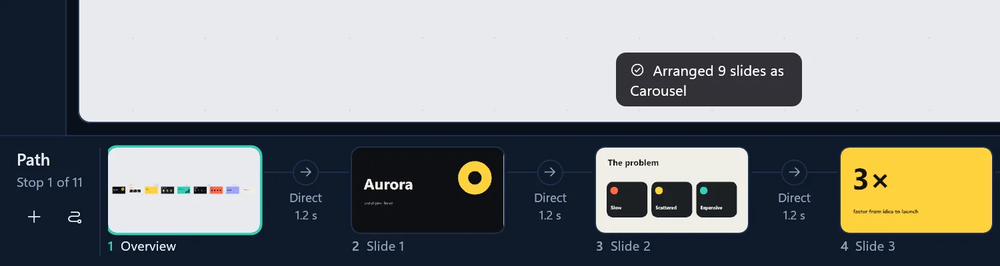
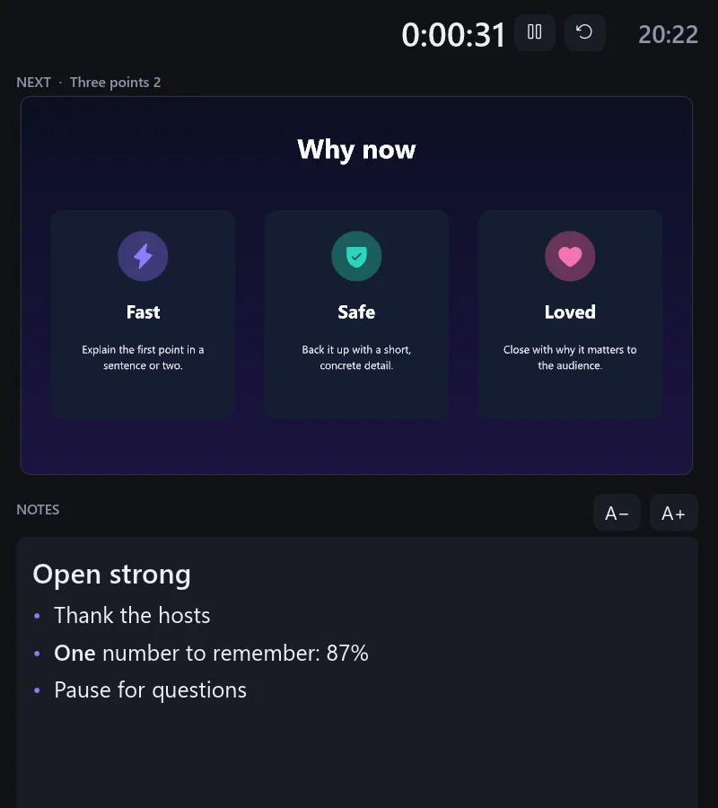
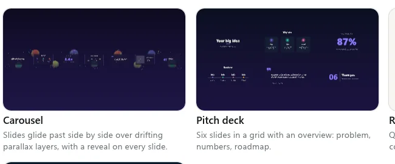
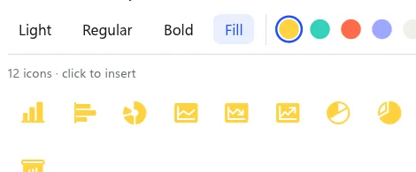
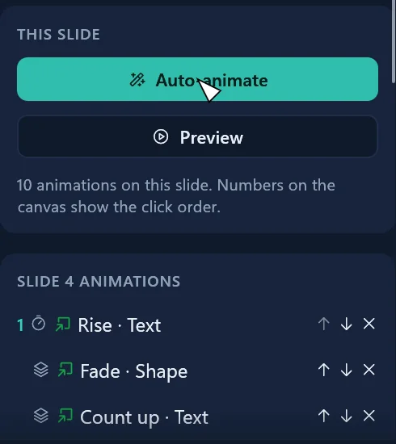
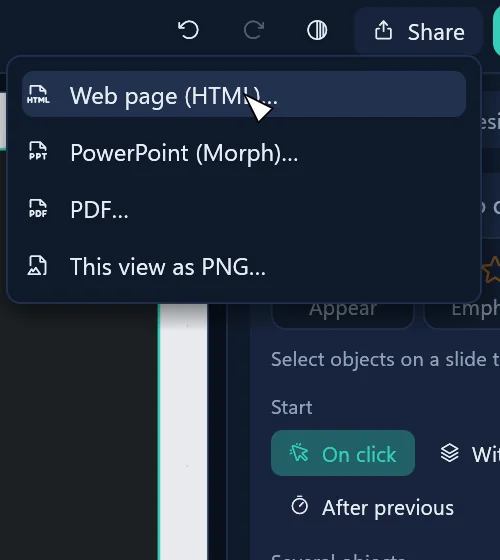

Fly it yourself
This is a real GlideDeck show, saved from the app as one web page. Click it to fly on, or pick a stop.
Arrow keys work too. The whole show is one 230 KB file: every flight, fade and build plays exactly as it does in the app.
Ideas aren’t a list.
They connect, nest and branch. Slides push them into single file and hide how they fit together. A canvas shows the whole map first, flies into the detail, then pulls back, so nobody loses the thread.
What GlideDeck does
- Import PowerPoint…
Open any .pptx. Slides, text, pictures and speaker notes come along.
- Arrange slides
One click turns the deck into a carousel, a spiral, orbits, a tree or a zoom tunnel.
- Auto-animate
Builds a whole slide in: headings, text and pictures arrive in order.
- Draw a frame
Drag anywhere on the canvas, even inside another slide, to make a new stop.
- Present
A fullscreen show. With a projector connected, presenter view starts by itself.
- Rehearse with notes
Your notes, the next slide and a timer, all on one screen.
- Share as web page
One .html file that plays the full show in any browser. Nothing to install.
- Export to PowerPoint
Every camera move becomes a native Morph transition, so PowerPoint flies too.
No command by that name. Try “share”, “arrange” or “present”.
Two minutes to takeoff.
- Seconds
First, drop in a PowerPoint file or pick one of 18 templates.
- One click
Then Arrange turns the grid of slides into a spiral, orbits or a carousel.
- One click
Next, Auto-animate builds every slide in.
- As long as your talk
Finally, press F5 and fly. Afterwards, share the show as a web page, a PDF or a PowerPoint file.
Every detail, close up






Plays well with
Free, private and offline
- No account.Nothing to sign up for. Install it and start.
- No cloud.Your deck is one file on your own disk. No telemetry.
- No subscription.Free and open source under the MIT licence: no trials, no watermarks, no locked features.
Fair questions
PriceIs it really free?
Yes. GlideDeck is free and open source, and it stays that way. If it helps a talk land, you can sponsor it on GitHub.
ViewersDo my viewers need GlideDeck?
No. Present from your computer, send a web page that plays the full show in any browser, or export to PowerPoint or PDF.
PreziIs GlideDeck a Prezi alternative?
Yes. Like Prezi, GlideDeck puts your talk on a zooming canvas instead of a stack of slides. It is free and open source, needs no account or subscription, runs offline on your own computer, opens and exports PowerPoint files, and shares the show as a single web page.
PowerPointWhat comes along from PowerPoint?
Slides, text with its formatting, shapes, pictures, backgrounds and speaker notes. Tables, charts and SmartArt aren’t converted yet; GlideDeck lists them for you.
AICan an AI assistant build the deck?
Yes. GlideDeck includes an MCP server and an agent skill, so Claude and GitHub Copilot can create a complete presentation, with slides, speaker notes, a camera path and animations, that you then open and edit in GlideDeck. See the AI guide.
PrivacyWhere does my deck live?
On your disk, as one file with its pictures in a folder beside it. There are no accounts, no cloud and no telemetry. The app goes online only when you ask it to: to check for updates, or to add and play a web video.
ComputersWhat does it run on?
Windows 10 and 11 (64-bit), and Macs with Apple Silicon or Intel. The Mac app is signed and notarized by Apple.
InstallingWindows says it protected my PC?
Windows warns about new downloads until they build up a reputation. Click More info, then Run anyway. Windows releases are being signed through SignPath Foundation (see the code signing policy), and every release lists SHA-256 checksums if you want to verify the file.
Your turn to fly.
Install it and press F5. The welcome canvas is itself a show, so it flies you around.
Get GlideDeck
GlideDeck-x64.msi, about 40 MB
Download for WindowsAlways the latest version. All releases and checksums · Code signing policy